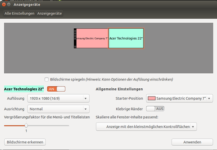
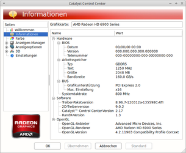
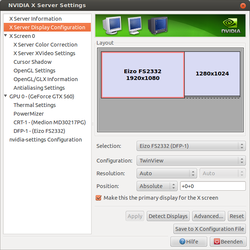

XServer grafisch einrichten
Dieser Artikel wurde für die folgenden Ubuntu-Versionen getestet:
Ubuntu 14.04 Trusty Tahr
Zum Verständnis dieses Artikels sind folgende Seiten hilfreich:
 Nicht immer möchte man die zentrale XServer-Konfigurationsdatei /etc/X11/xorg.conf per Hand bearbeiten, da vor allem Neulingen, die mit der Syntax nicht vertraut sind, leicht Fehler unterlaufen. In der Folge kann es passieren, dass sich der XServer beim nächsten Mal nicht mehr starten lässt und man nur noch einen schwarzen Bildschirm sieht.
Nicht immer möchte man die zentrale XServer-Konfigurationsdatei /etc/X11/xorg.conf per Hand bearbeiten, da vor allem Neulingen, die mit der Syntax nicht vertraut sind, leicht Fehler unterlaufen. In der Folge kann es passieren, dass sich der XServer beim nächsten Mal nicht mehr starten lässt und man nur noch einen schwarzen Bildschirm sieht.
Obwohl das prinzipiell nicht wirklich ein Problem darstellt – solange der Rechner weiterläuft – beherrschen nur wenige den Umgang mit einem Terminal oder wissen nicht, wo sie dann ansetzen sollen. Um das zu vermeiden, gibt es grafische Konfigurationshilfen, mit denen man die meisten XServer-Einstellungen grafisch bearbeiten kann.
Da sich der XServer heute weitgehend automatisch konfiguriert, haben Einzel-Programme zur grafischen Konfiguration stark an Bedeutung verloren. Daher kommen die meisten Anwender nur noch indirekt mit dieser Datei in Berührung – die Einstellungsmöglichkeiten der Desktop-Umgebungen nehmen einem die Arbeit ab. Wichtig in diesem Zusammenhang ist aber immer noch der Artikel RandR.
Ausnahmen bestätigen die Regel: die proprietären Grafiktreiber der Firmen AMD (früher ATI) und NVidia bringen eigene, theoretisch desktop-unabhängige Werkzeuge mit.
|  |
| Anzeigegeräte ab 14.04 |
Unity/GNOME 3 (ab Ubuntu 11.10)¶
Unter "Systemeinstellungen -> Anzeigegeräte" kann die Auflösung und Ausrichtung der Anzeigegeräte eingestellt werden. Außerdem kann man den Bildschirm spiegeln und bei mehreren Bildschirmen einzelne abschalten (ein Beamer ist praktisch nichts anderes, auch wenn dieser in der Regel eher an- statt abschalten werden soll).
Auf welchem Bildschirm das Menü dargestellt wird, lässt sich hier einstellen, indem der kleine schwarze Balken auf den gewünschten Schirm gezogen wird.
Auch wenn die Einstellung hier vorgenommen wurde, kann es bei einer HDMI-Verbindung von Computer und Monitor zu Problemen kommen - ausweichen auf DVI oder notfalls VGA schafft teilweise Abhilfe. Dabei ist DVI als digitales Signal zu bevorzugen. Der Computer muss nicht notwendigerweise mit einem DVI-Ausgang ausgestattet sein, es kann reichen, wenn ein Adapter(kabel) verwendet wird.
Seit Ubuntu 14.04 ist es möglich mit Hilfe eines Schiebereglers einen Vergrößerungsfaktor für Menüs und Titelleisten festzulegen. Dies ist bei Monitoren mit sehr hoher Pixeldichte hilfreich. Hinzugekommen sind die "Allgemeine Einstellungen"
KDE¶
Unter KDE kann die Auflösung im K-Menü unter
"Systemeinstellungen -> Monitor & Display"
"Systemeinstellungen -> Anzeige und Monitor" (Kubuntu 12.04)
eingestellt werden. Details sind dem Artikel KDE-Systemeinstellungen zu entnehmen.
Xfce¶
Im Einstellungsmanager unter "Anzeige" kann man die Auflösung einstellen und mit "OK" übernehmen. Bei den vorhandenen Einstellungsmöglichkeiten gibt es Unterschiede zwischen den verschiedenen Xfce-Versionen 4.6, 4.8 und 4.10. Ab Xubuntu 11.04 lassen sich erstmals auch mehrere Bildschirme über den integrierten Einstellungsmanager komfortabel verwalten. Unter älteren Xfce- und damit auch Xubuntu-Versionen sind die Möglichkeiten deutlich eingeschränkter.
Weitere Informationen sind im Artikel Xfce Einstellungen zu finden.
LXDE¶
LXDE bzw. Lubuntu bringt das Werkzeug LXRandR  mit. In den LXDE Einstellungen im Menü unter
mit. In den LXDE Einstellungen im Menü unter
"Einstellungen -> Bildschirmauflösung" oder
"Einstellungen -> Bildschirmeinstellungen" oder
"Einstellungen -> Monitor Settings"
die gewünschte Auflösung einstellen und mit "OK" übernehmen. Dabei wird ein Programmstarter unter ~/.config/autostart/lxrandr-autostart.desktop angelegt, der beispielsweise so aussehen kann:
[Desktop Entry] Type=Application Name=LXRandR autostart Comment=Start xrandr with settings done in LXRandR Exec=sh -c 'xrandr --output LVDS --mode 1680x1050 --rate 60.1 --output VGA-0 --off' OnlyShowIn=LXDE
Man beachte die gelben Markierungen – ohne diese kann der Autostart scheitern.
Leider wurde mit Lubuntu 13.10 das Autostart-Verhalten geändert, so dass man hier nun den Befehl:
xrandr --output LVDS --mode 1680x1050 --rate 60.1 --output VGA-0 --off
stattdessen in die Datei ~/.config/lxsession/Lubuntu/autostart eintragen muss (zu den Details siehe Autostart).
Grafiktreiberprogramme¶
Proprietäre Grafiktreiber bringen ihre eigenen Programme mit, um gewisse Treibereinstellungen tätigen können. Mit diesen kann man zwar nicht alle XServer-Einstellungen beeinflussen, aber in der Regel die wichtigsten bzgl. Grafikkarte und Bildschirmaufteilung.
|  |
| ATI Catalyst Control Center |
ATI Catalyst Control Center¶
Für ATI gibt das Catalyst Control Center, welches sowohl bei der normalen fglrx-Installation als auch bei der manuellen Installation über das folgende Paket installiert [1] werden kann:
fglrx-amdcccle
 mit apturl
mit apturl
Paketliste zum Kopieren:
sudo apt-get install fglrx-amdcccle
sudo aptitude install fglrx-amdcccle
Es taucht dann bei Ubuntu-Varianten mit einem Anwendungsmenü als "System -> Catalyst Control Center" auf. Dort kann man unter "Desktop Setup" einfach "Big Desktop Horizontal" einstellen. Ein Problem ist, dass dafür Root-Rechte benötigt werden, das Catalyst Control Center aber beim Starten nicht nach dem Passwort fragt. Stattdessen startet man das Programm mit Root-Rechten mittels [3]
gksudo amdcccle
bzw. unter KDE mit
kdesudo amdcccle
Hinweis:
Es gibt früher einen Fehler im Programm, so dass die Einstellungen zwar gespeichert, aber nach dem Start des Programms nicht korrekt gelesen wurden. Das führte dazu, dass das Control Center immer mit einer Standardkonfiguration erschien.
|  |
| NVIDIA X Server Settings |
NVIDIA X Server Settings¶
Möchte man die erweiterten graphischen Möglichkeiten einer NVIDIA-Grafikkarte nutzen, müssen zuerst die proprietären Treiber installiert werden. Dabei wird normalerweise auch das grafische Hilfsprogramm nvidia-settings mitinstalliert. Sollte es fehlen, so kann man das Paket nachinstallieren [2]:
nvidia-settings
mit apturl
Paketliste zum Kopieren:
sudo apt-get install nvidia-settings
sudo aptitude install nvidia-settings
Man findet das Programm nach der Installation unter
"Systemwerkzeuge -> NVIDIA X Server Settings"
Dieses beinhaltet über den Reiter "X Server Display Configuration" eine Möglichkeit, TwinView komfortabel einzurichten. Alle Einstellungsmöglichkeiten werden im Artikel nvidia-settings genau beschrieben.
 Übersichtsartikel
Übersichtsartikel- Erstellt mit Inyoka
-
 2004 – 2017 ubuntuusers.de • Einige Rechte vorbehalten
2004 – 2017 ubuntuusers.de • Einige Rechte vorbehalten
Lizenz • Kontakt • Datenschutz • Impressum • Serverstatus -
Serverhousing gespendet von